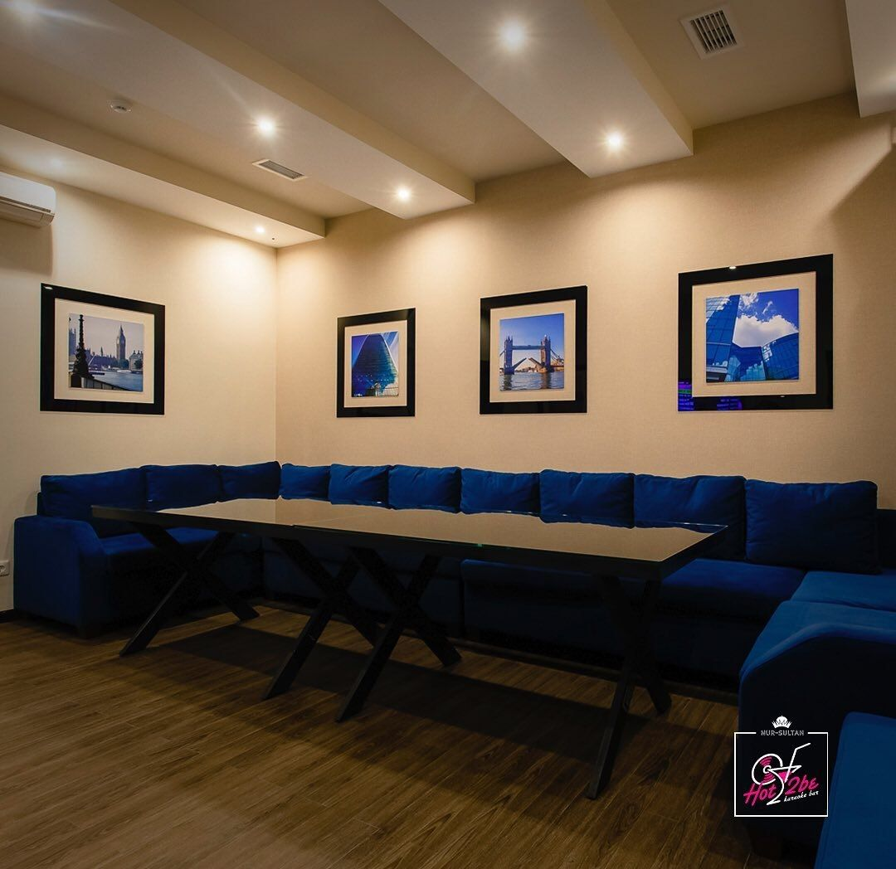
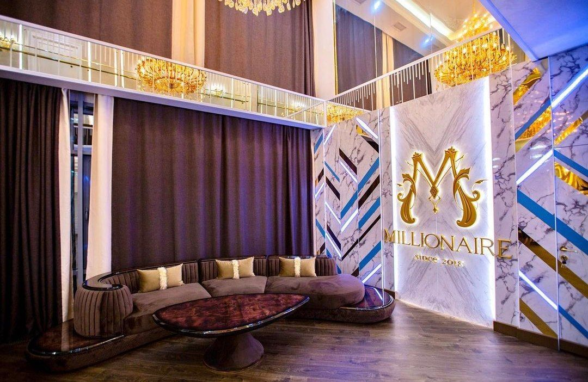
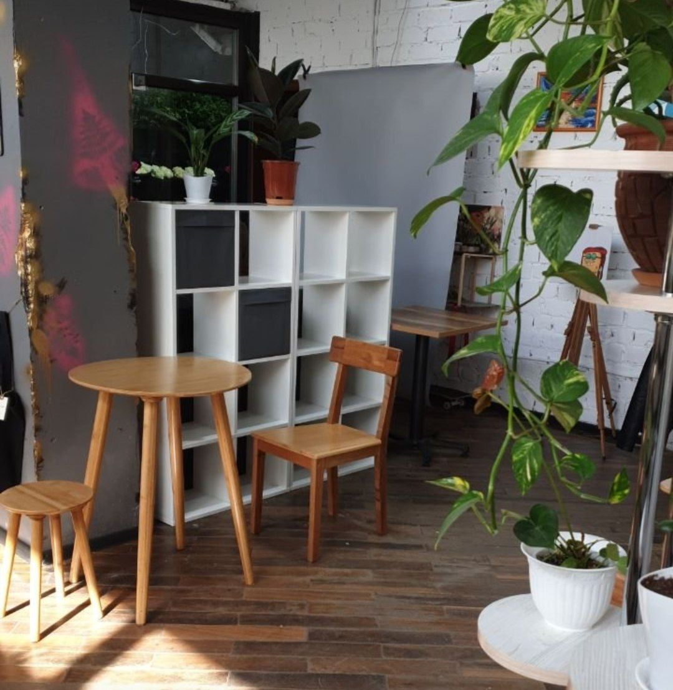
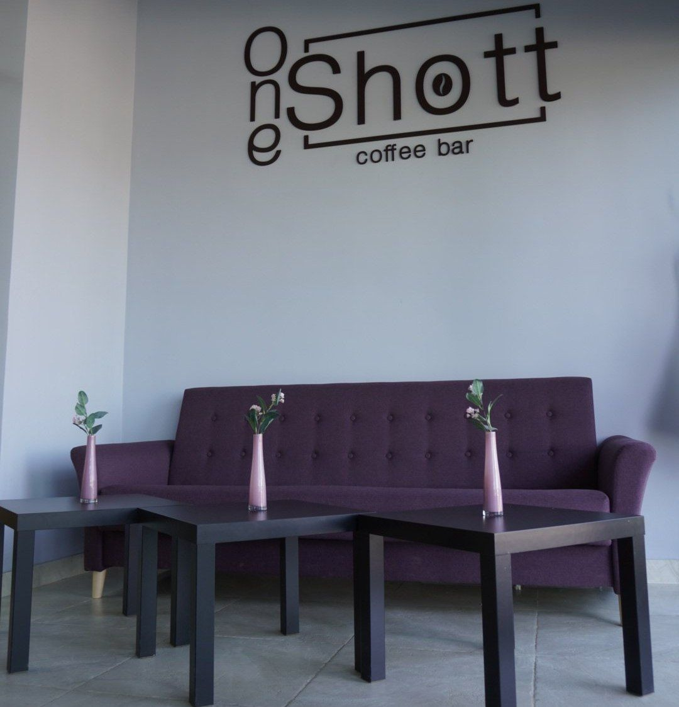

Capital City Establishments

List of " cafe & restaurants " where you can:
- Have seafood:
- Marcello
- Okadzaki
- Yakitoriya
- Porto Verde
- Ocean Basket
- Sing in karaoke:
- Hot2be
- Millionaire
- Janym Soul
- Ginza Karaoke
- Jimmy acha-acha
- Take your pet with you:
- Salad Bar
- Cafe Keks
- Cafe Tochka
- Jasyl Coffee
- Oneshott Coffee
- Eat traditional kazakh food:
- Navat
- Arnau
- Tezbesh
- Vechnoe Nebo
- Qazaq Gourmet
|
Marcello
Light and cozy atmosphere of European cuisine. An extensive wine list and a wide selection of grilled dishes include fish and seafood of the highest quality.
The establishment also has a separate children's menu, which offers hot dishes, side dishes and drinks for younger guests.
Okadzaki
Okadzaki restaurants are suitable for any celebration and meeting, be it a romantic date, a business meeting or a family evening. Here you can try a warm salad of seafood and oranges, as a perfect combination of salmon and shrimp is
created.
Yakitoriya
The place is perfect for a family dinner or meeting with friends. In addition to delicious Japanese cuisine, here you can enjoy a beautiful view of the city, as well as have fun rocking out to live music, DJ Set.
Porto Verde
Having been here, you will feel the real colorful atmosphere of the south of France and plunge into the world of exquisite European cuisine. Among the rich assortment of marine inhabitants, the eyes simply run wide,
the guests of the
restaurant can choose any fish they like and the way of cooking.
Ocean Basket
Popular South African brand. Wide selection of grilled seafood. Menu includes soups, sushi, and desserts in addition to shrimp, squid and fish. Families will be pleased with the presence of a children's area.
Hot2be

The menu of the karaoke bar offers dishes of American, European and Oriental cuisine. The range includes mouth-watering pizzas, steaks, exclusive cocktails, beer sets and a wine list. A huge range of cuisine and
bar, only fresh
products and delicious cocktails. On Thursdays at Hot2be there is a wine evening: a bottle of wine comes with an appetizer as a gift. And on Sunday, when you order two cocktails, you get the third one for free.
Millionaire

Excellent author's cuisine and wine list, friendly service and beautiful interiors of VIP halls will do their job and the evening in the MILLIONAIRE karaoke restaurant will be pleasantly remembered for a long time.
The menu includes dishes of European, Oriental and Pan-Asian cuisines.
The karaoke has 7 exclusive VIP rooms with individual karaoke and unique design, with a capacity of 6 to 25 people.
Janym Soul

Karaoke with a warm Kazakh name "Janym Soul", widespread throughout Kazakhstan, is a favorite place for those who like to sing. The institution can organize any turnkey event, including children's parties. Here they prepare excellent
kebabs and various sets for any company. The menu offers dishes of European cuisine.
Ginza Karaoke

A restaurant where you can spend a pleasant evening with your family, sing karaoke with friends or entertain children with interesting master classes and a fun program. Delicious cuisine will not leave you indifferent. Beautiful
interior, pleasant environment and culinary arts from the chefs of the restaurant - all this in one place!
Jimmy acha-acha

Karaoke club Jimmy Acha-Acha with its colorful design plunges into the fabulous world of India, with its colorful dances and incendiary songs. Moreover, thanks to modern professional equipment, ordinary entertainment turns
into a real
pleasure for everyone. The range of songs is regularly updated!
Salad Bar

This is a place where everyone can assemble a bowl to their taste by mixing ingredients.
Step 1 - Select your protein (chicken breast, tofu, beef, shrimp, etc.).
Step 2 - Choose Vegetables (Cucumbers, Red Cabbage, Tomatoes, etc.).
Step 3 - Choose a booster (eggs, chickpeas, corn, etc.).
Step 4 - choose a marinade (sauerkraut, Korean carrots, etc.).
Step 5 - Choose your grains (couscous, brown rice, green buckwheat, etc.).
Step 6 - Choose Premium (Jalapeños, Capers, Walnuts, etc.).
After assembling the ingredients, you can choose a dressing. All this will be mixed together in a large bowl. You can also order ready-made bowls.
Cafe Keks
This is a coffee shop with its own full cycle bakery. Fresh bread is brought to the shelves every morning. Until 12:00, free coffee is served with breakfast sets. In addition to breakfast, you can try soups, sandwiches, hot dishes
and snacks. The coffee shop welcomes pets and even offers tasty treats.
Cafe Tochka
This is a small conceptual establishment where you can not only drink coffee, but also have a full breakfast, lunch or dinner. The menu offers dishes of European cuisine: pasta, salads, main courses and appetizers. They also
have
burgers and sandwiches. The institution does not have a percentage for service, voluntary tips are welcome here.
Jasyl Coffee


A nice cozy coffee shop with a variety of coffee drinks, both caffeinated and uncaffeinated. The menu includes wanpaku sandwiches (huge sandwiches with vegetables and an egg originally from Japan, matcha desserts, Japanese
mochi
dessert and, of course, drinks: White Chocolate Matcha, Blue Matcha, Pink Matcha, Turmeric Latte, Cocoa Hazelnut, Ripe Melon Latte, Lavender raf, Oolong milk tea.
Oneshott Coffee


This is an atmospheric coffee shop with a light and cozy interior. Croissants, paninis, donuts, macarons and lots of coffee are what you can try here. You can visit the institution with your pet to relax or work.
Navat

Ideal for family holidays. Preserving and honoring the centuries-old traditions of oriental hospitality and family values, this establishment leaves only positive emotions. Traditional food and music gives a folk atmosphere.
Arnau

The concept of the restaurant is high Kazakh national cuisine, refined and delicious at home. The fashionable interior with national motifs captivates with its cosiness and splendor, and live music with the colorful sound of Kazakh
folk instruments creates a special mood.
Tezbesh

In this place, each guest will be able to taste appetizing, nutritious, and at the same time affordable dishes, which are based on the pure, rich taste of meat, enhanced by ancient methods of processing - curing and smoking. And, of
course, it is here that you can taste the same beshbarmak made from smoked horse meat - the quintessence of northern Kazakh cuisine.
Vechnoe Nebo


Authentic local restaurant. Great location on the 25th floor of the shopping center with a panoramic view of the city.Excellent local cuisine. There is a good selection of Western wines. Also, very friendly service and nice
atmosphere makes this restaurant unforgettable.
Qazaq Gourmet

Very colorful restaurant, it can be said to be the only one of its kind. Beautiful interior with luxurious furniture traditional assortment of clothes and dishes, it gives an atmosphere of nomadic culture.
If you have visited one of these places, then please leave us a review: